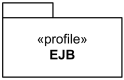
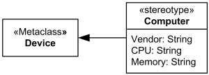
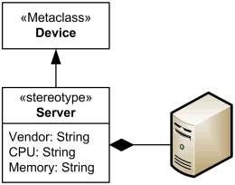
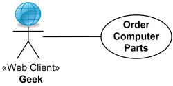
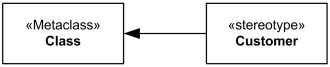
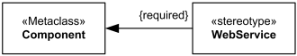
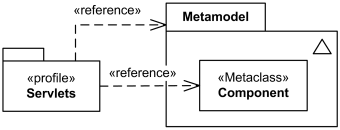

UML Profile Diagrams Reference
| Notation | Description |
|---|---|
| Profile | |
|

Profile EJB |
Profile uses the same notation as a package, with the addition that the keyword «profile» is shown before or above the name of the package. |

Profile Servers |
A profile can define classes, stereotypes, data types, primitive types, enumerations. |

EJB Profile shown as a package with URI attribute. |
Package since UML 2.4 has optional URI attribute which serves as unique identifier of the package. Profile is a package, and the URI attribute was introduced mostly to support exchange of profiles using XMI. The URI attribute of a profile may be rendered in the form {uri=<uri>} after the profile name. See details at URI package attribute. |
| Metaclass | |

Metaclass Component |
Metaclass is a profile class and a packageable element which may be extended through one or more stereotypes. A metaclass may be shown with the optional stereotype «Metaclass» shown above or before its name (all lower-case «metaclass» was used in UML versions prior to 2.4). |
|

Stereotype Computer extends metaclass Device |
Metaclass may be extended by one or more stereotypes using special kind of association - extension. |
| Stereotype | |

Servlet Stereotype extends Component. |
A stereotype uses the same notation as a class, with the addition that the keyword «stereotype» is shown before or above the name of the stereotype. Stereotype names should not clash with keyword names for the extended model element. |

Stereotype Servlet with attached custom icon. |
Stereotype can change the graphical appearance of the extended model element by using attached icons represented by Image class. |

Actor is extended by stereotype Web Client with attached custom icon. |
|
|

Device extended by Server stereotype with tag definitions and custom icon. |
Properties of a stereotype are referred to as tag definitions. |
| Stereotype Applied | |

Stereotype «Servlet» applied to the model element SearchServlet |
Stereotype is applied when it is used on use case diagrams, class diagrams, deployment diagrams, etc. UML versions before 2.4 required the first letter of the name of the applied stereotype to be in lower case (e.g. «servlet»). Starting from UML 2.4, the first letter should normally be in upper case. Naming stereotype applications with lower-case letters where the stereotypes themselves are defined using upper-case first letter is still valid but is considered obsolete. |
|
Servlet stereotype applied to the class SearchServlet. |
When a stereotype includes the definition of an icon, this icon can be graphically attached to the model elements extended by the stereotype. Every model element that has a graphical presentation can have an attached icon. When a model element is extended by one single stereotype the icon can be presented in a reduced shape, inside and on top of the box representing the model element. |
|
Servlet stereotype applied to the class SearchServlet. |
When stereotype is applied, the whole classifier box can be replaced by enlarged icon of the stereotype. |
|

«Web Client» stereotype applied to the Geek actor. |
|

Computer stereotype with tags applied to Device class. |
|
| Generalization of stereotypes | |

Abstract stereotype Session EJB is specialized by stereotypes Stateless EJB and Stateful EJB. |
A stereotype may generalize or specialize only another stereotype. |
| Tag Definition | |
|
Stereotype Computer with tag definitions for vendor, CPU, and memory. |
Properties of a stereotype are referred to as tag Definitions. |
| Tagged Value | |

Stereotype Computer applied using "traditional" tag values notation. |
Profile diagrams are used to show tag definitions. Stereotype is applied when it is used on use case diagrams, class diagrams, deployment diagrams, etc. When a stereotype is applied to a model element, the values of its properties may be referred to as tagged values. Tag values could be shown using "traditional" UML 1.x tagged values notation in curly braces under stereotype name. |

Stereotype Computer applied with tag values in compartment |
Tag values could be shown in compartment under stereotype name. |

Stereotype Computer applied with tag values in comment note |
Tag values could be shown in attached comment note under stereotype name. |
| Extension | |
|

Metaclass Class is extended by stereotype Customer. |
An extension is association relationship used to indicate that the properties of a metaclass are extended through a stereotype. The notation for an extension is an arrow pointing from a stereotype to the extended metaclass, where the arrowhead is shown as a filled triangle. Because extension is subclass of association, it may have usual association adornments, but navigability arrows should not be shown. Adornments of an extension are typically suppressed. |
|

Required extension of metaclass Component by stereotype WebService. |
Required extension is shown using the {required} property near the extension end. It is also allowed to use multiplicity 1 on the extension end as an alternative to the {required}. Multiplicity 0..1 corresponds to non-required extension. |
 Interface or Class metaclasses.")
Stereotype Provider extends either (or both?) Interface or Class metaclasses. |
Each stereotype may extend one or more metaclasses. This might cause some confusion. For example, UML 2.3 specification explains its Figure 18.16 as "the same stereotype Clock can extend either the metaclass Component or the metaclass Class." Either is confusing as it suggests that extension is kind of or relationship but not and as we'd assume. The same "either" approach is applied in [SoaML 1.0 Beta 2] - stereotype Provider extends either (or both?) Interface or Class metaclasses. The SoaML explains that Interface is used in the case of a non composite service contract while Class - in the case of a composite service contract. |
| Reference | |
|

Metaclass Component is referenced (imported) by profile Servlets. |
Reference is import relationship represented as
element import
or package import.
The keyword «reference» is shown near the line.
|
| Profile Application | |

Profiles Java and Servlets applied to the package WebApplication. |
Applied profile is shown using a dashed arrow with an open arrowhead from the package to the applied profile. The keyword «apply» is shown near the arrow. If multiple applied profiles have stereotypes with the same name, it may be necessary to qualify the name of the stereotype with a profile name. |